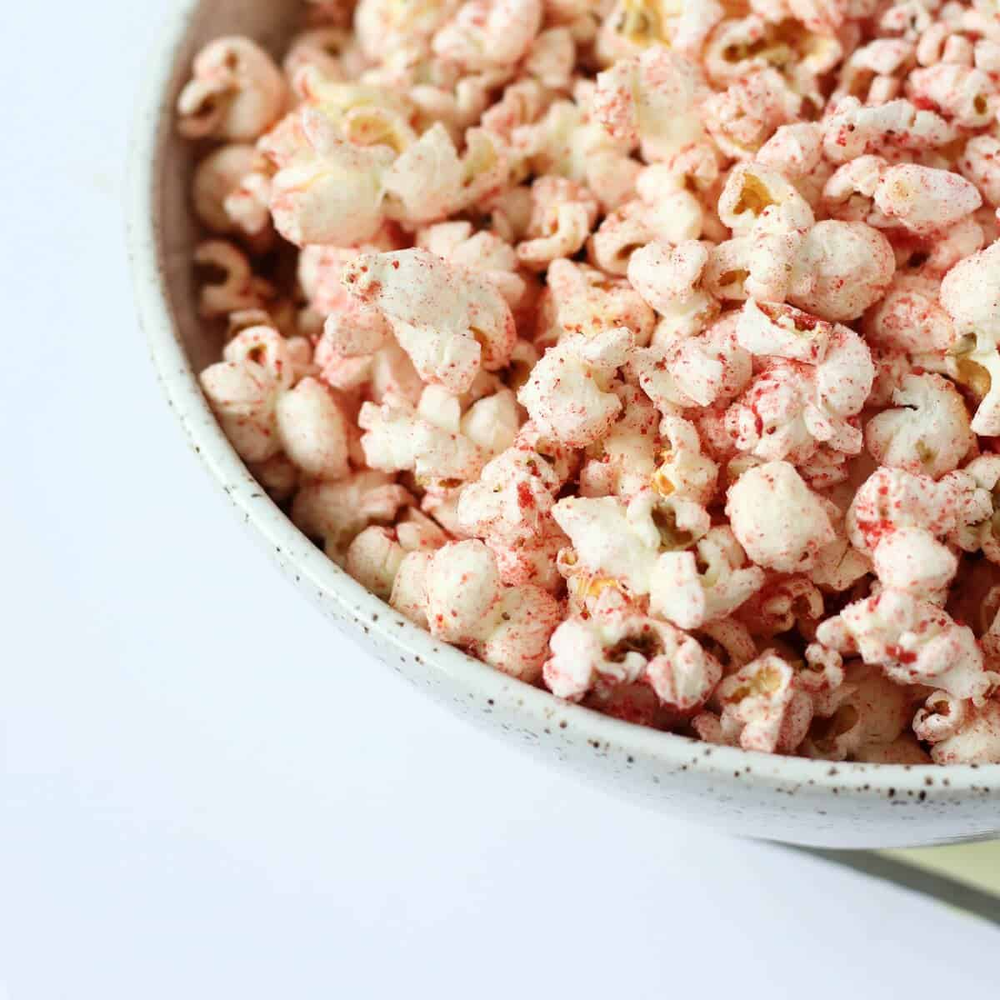

Strawberry Popcorn

Description
This popcorn is flavored with strawberry sugar,
giving it strawberry flavored kettle corn vibes!
Ingredients
- 2 teaspoons granulated sugar
- 1 pinch kosher salt
- 1/2 cup freeze dried strawberries
- ¼ cup popcorn kernels
- 3 tablespoons neutral oil divided
Instructions
-
In a blender or food processor (the smaller the better), combine the sugar,
salt and strawberries. Process until the strawberries are as fine as possible.
Set aside while you work on the popcorn.
-
Pop the popcorn however you would like,
whether that be in an air popper,
on the stove in a big pot,
or even using a bag of microwave popcorn.
-
If you pop the corn on the stove,
place 1 ½ tablespoons oil and the popcorn in a big pot over medium heat and cover.
Shake the covered pot (while wearing oven mitts) when you start to hear the kernels pop,
then remove from the heat and uncover.
-
Drizzle the remaining 2 tablespoons oil over the popcorn,
and sprinkle the strawberry sugar on top.
Toss to coat and serve!